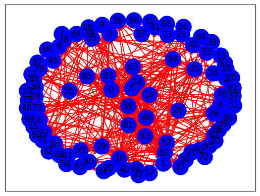

Summary#
Instalasi dan import library#
Menginstal library yang dibutuhkan untuk proses crawling, pengolahan teks, dan analisis jaringan.
!pip install networkx matplotlib nltk Sastrawi tqdm pandas sklearn requests beautifulsoup4
Requirement already satisfied: networkx in /usr/local/lib/python3.10/dist-packages (3.4)
Requirement already satisfied: matplotlib in /usr/local/lib/python3.10/dist-packages (3.7.1)
Requirement already satisfied: nltk in /usr/local/lib/python3.10/dist-packages (3.8.1)
Requirement already satisfied: Sastrawi in /usr/local/lib/python3.10/dist-packages (1.0.1)
Requirement already satisfied: tqdm in /usr/local/lib/python3.10/dist-packages (4.66.5)
Requirement already satisfied: pandas in /usr/local/lib/python3.10/dist-packages (2.2.2)
Collecting sklearn
Downloading sklearn-0.0.post12.tar.gz (2.6 kB)
error: subprocess-exited-with-error
× python setup.py egg_info did not run successfully.
│ exit code: 1
╰─> See above for output.
note: This error originates from a subprocess, and is likely not a problem with pip.
Preparing metadata (setup.py) ... ?25l?25herror
error: metadata-generation-failed
× Encountered error while generating package metadata.
╰─> See above for output.
note: This is an issue with the package mentioned above, not pip.
hint: See above for details.
Import library#
!pip install Sastrawi # Install the correct package
import numpy as np
import pandas as pd
import requests
import re
import networkx as nx
from urllib.request import urlopen
from bs4 import BeautifulSoup
from tqdm import tqdm
import nltk
nltk.download('stopwords')
nltk.download('wordnet')
nltk.download('punkt')
from nltk.tokenize import sent_tokenize , word_tokenize
from nltk.corpus import stopwords
# Import from the correct package and module
from Sastrawi.Stemmer.StemmerFactory import StemmerFactory
from sklearn.feature_extraction.text import CountVectorizer
from sklearn.feature_extraction.text import TfidfVectorizer
from sklearn.metrics.pairwise import cosine_similarity
from sklearn import preprocessing
Requirement already satisfied: Sastrawi in /usr/local/lib/python3.10/dist-packages (1.0.1)
[nltk_data] Downloading package stopwords to /root/nltk_data...
[nltk_data] Package stopwords is already up-to-date!
[nltk_data] Downloading package wordnet to /root/nltk_data...
[nltk_data] Package wordnet is already up-to-date!
[nltk_data] Downloading package punkt to /root/nltk_data...
[nltk_data] Package punkt is already up-to-date!
Crawling artikel#
Mengambil konten artikel dari URL menggunakan BeautifulSoup.
def crawl_article(url):
try:
response = requests.get(url)
response.raise_for_status() # Memastikan permintaan berhasil
soup = BeautifulSoup(response.content, 'html.parser')
# Mengambil judul
title_element = soup.find('h1', class_='jeg_post_title')
title = title_element.get_text(strip=True) if title_element else 'Judul tidak ditemukan'
# Mengambil Isi
content_div = soup.find('div', class_='content-inner')
if content_div:
paragraphs = content_div.find_all('p')
content = "\n".join(p.get_text(strip=True) for p in paragraphs)
else:
content = 'Isi artikel tidak ditemukan'
# Mengambil tanggal
date_div = soup.find('div', class_='jeg_meta_date')
date_text = date_div.find('a').get_text(strip=True) if date_div else 'Tanggal tidak ditemukan'
# Mengambil kategori
category_meta = soup.find('span', class_='breadcrumb_last_link')
if category_meta:
category_link = category_meta.find('a')
category = category_link.get_text(strip=True) if category_link else 'Kategori tidak ditemukan'
else:
category = 'Kategori tidak ditemukan'
return {'Judul': title, 'Isi': content, 'Tanggal': date_text, 'Kategori': category}
except requests.RequestException as e:
print(f"Error fetching article: {e}")
return None
article_url = input("Masukkan URL artikel: ")
# Melakukan crawl pada satu artikel
article = crawl_article(article_url)
# Membuat DataFrame dari dictionary
if article:
df = pd.DataFrame([article])
print(df)
else:
print("Gagal mengambil artikel.")
---------------------------------------------------------------------------
StdinNotImplementedError Traceback (most recent call last)
<ipython-input-3-873d7673154a> in <cell line: 37>()
35 return None
36
---> 37 article_url = input("Masukkan URL artikel: ")
38
39 # Melakukan crawl pada satu artikel
/usr/local/lib/python3.10/dist-packages/ipykernel/kernelbase.py in raw_input(self, prompt)
846 """
847 if not self._allow_stdin:
--> 848 raise StdinNotImplementedError(
849 "raw_input was called, but this frontend does not support input requests."
850 )
StdinNotImplementedError: raw_input was called, but this frontend does not support input requests.
Preprosesing teks#
mengubah teks menjadi huruf kecil
# Fungsi untuk mengubah teks menjadi huruf kecil
def clean_lower(text):
if isinstance(text, str):
return text.lower()
return text
df['lower case'] = df['Isi'].apply(clean_lower)
df['lower case']
| lower case | |
|---|---|
| 0 | tugas lapangan di cepu, blora, membawa saya pa... |
Membersihkan tanda baca dan angka
# Fungsi untuk membersihkan tanda baca dan angka (menghapus koma)
def clean_punct(text):
if isinstance(text, str):
clean_patterns = re.compile(r'[0-9]|[/(){}\[\]\|@,;_]|[^a-z .]+') # Koma dihilangkan dari pengecualian
text = clean_patterns.sub(' ', text)
text = re.sub(r'\s+', ' ', text).strip()
return text
return text
df['tanda baca'] = df['lower case'].apply(clean_punct)
df['tanda baca']
| tanda baca | |
|---|---|
| 0 | tugas lapangan di cepu blora membawa saya pada... |
Normalisasi spasi
# Fungsi untuk normalisasi spasi
def _normalize_whitespace(text):
if isinstance(text, str):
corrected = re.sub(r'\s+', ' ', text)
return corrected.strip()
return text
df['spasi'] = df['tanda baca'].apply(_normalize_whitespace)
df['spasi']
| spasi | |
|---|---|
| 0 | tugas lapangan di cepu blora membawa saya pada... |
Tokenisasi kata
# Tokenisasi
def tokenize_text(text):
if isinstance(text, str):
return word_tokenize(text)
return text
df['token'] = df['spasi'].apply(tokenize_text)
df['token']
| token | |
|---|---|
| 0 | [tugas, lapangan, di, cepu, blora, membawa, sa... |
Pembersihan stopwords
# Pembersihan stopwords setelah tokenisasi
def clean_stopwords(tokens):
if isinstance(tokens, list):
stopword = set(stopwords.words('indonesian'))
filtered_tokens = [word for word in tokens if word not in stopword]
return filtered_tokens
return tokens
df['stopwords'] = df['token'].apply(clean_stopwords)
df['stopwords']
| stopwords | |
|---|---|
| 0 | [tugas, lapangan, cepu, blora, membawa, warung... |
Gabungkan kembali token menjadi string
# Gabungkan kembali token menjadi string
df['processed_text'] = df['stopwords'].apply(lambda tokens: ' '.join(tokens) if isinstance(tokens, list) else '')
prep_result = df['processed_text'].to_dict()
print(prep_result)
{0: 'tugas lapangan cepu blora membawa warung pecel legendaris . namanya warung pecel sunti lokasinya jl . st. kota . warung kerap mengirim bumbu amerika rusia . . wib suasana warung pecel sunti berjejal pembeli kamis . masuk . antre pembeli pembeli memilih membungkus . orang laki laki berseragam kerja pekerja pertambangan minyak cepu blora makan . telas napa mboten bu habis nggak bu nasi boran tinggal mencoba . tenang mas paruh baya bernama tatik meladeni pembeli pembeli antre . tatik grapyak pembeli . jarang melempargojlokanke berujung salinggojlokdan gelak tawa . teman teman konten konten lek damis ya sosok tatik . orang cepu kaget mengiranya jutek . giliran . pengelola warung pecel sunti cepu blora menyodorkan sepiring nasi pecel lauk telur tempe . diguyur lodeh nggak mas . tawari barang kali masnya nggak cocok tawar tatik . mengangguk salahnya . dasarnya makan . halal kenyang . lantas meraih piring mengguyurnya sayur lodeh . pecelnya gurih manis . lokasi warung pecel suntiberada pohon . sepoi sepoi angin pohon sungguh menyegarkan . sepagi suasana cepu blora sumuk . . wib tersisa lauk etalase . nasi bumbu pecel ludes . untungsampeyan mas jam habis tatik longgar . beruntung memesan memesan bungkus teman teman tertidur penginapan . tatik memasak . wib dibantu keponakan adiknya . warung legendaris cepu blora lantas buka . wib . persis buka tatik pembeli langsung . putus putus . wajar jam pagi pecelnya ludes des . sehari nggak ngitung ya kilogram beras masak . pokoknya sehari habis boran nasi terang tatik . ramadan tatik buka sahur . wib . langsung diserbu pembeli . kilogram beras masak jaminan habis . warung pecel sunti buka cepu blora perempuan bernama sunti ibunya tatik . sunti jualan rumahnya lokasi warung . sunti pindah lokasi strategis persis pinggir jalan raya . dibilang area cepu kota . hitungannya bantu bantu . smp bantu jual sekolah . bawa warung bungkus . guru guru beli tatik ekspresif . smp tatik diajari sang dalammeracik bumbupecel tercipta cita gurih kemanisan . lulus sma bantu bantu sang . melayani pembeli proses dapur . sunti jatuh sakit . alhasil kendali warung pecel legendaris jatuh tangan tatik . sunti meninggal warung pecel sunti otomatis diteruskan tatik . anak keempat delapan bersauadara . kakak meninggal . itungannya tertua meneruskan adik tatik . adik tatik sisanya memiliki pekerjaan . tatik mengaku mengenal pelanggan warung pecel sunti . pelanggan pelanggannya ternyataturun temurun pelanggan anak cucu pelanggan era sunti . pelanggan pindah daerah kerap memesan bumbu pecel tatik . domisili jakarta . pelangganku jakarta pesen bumbu pecel dikirim anaknya kuliah amerika . rusia . ya obat kangen pecel anaknya suka pecel . pas cepu makannya beber tatik . tatik mengaku pelanggannya berasal kampus kerap kuliah kerja nyata kkn cepu blora . institut teknologi surabaya its upn veteran yogyakarta . turun temurun ceritanya . mahasiswa kkn kampus tatik . laki laki humoris membantu tatik meladeni pembeli adiknya laki laki anak tatik . tatik mengaku anak . berumur kepala tatik memutuskan menikah . lulus sma nikah nggak tatik . lantas menceritakan momen . mohon maaf tulis detilnya . pengelola warung legendaris mewariskan warung sang anak . tatik memiliki anak warung pecel legendaris cepu blora kelak diteruskan adik adiknya . ajari adik bumbu pecelnya neruskan warung tatik . hanyut obrolan adik sunti beres beres . sebentar warung pecel legendaris cepu blora tutup . menyodorkan nominal uang pesanan . seporsi nasi pecel sayur lodeh lauk telur tempe harganya rp ribu . lauk lauk menyesuaikan jenis lauk dipilih ayam lele . oh bungkusnya pakai daun jati gumam menerima nasi bungkus pesan . hooh mas . ciri khasnya cepu bungkus bungkus makanan pakai daun jati . gurih timpal tatik . berpamitan tatik mampir warung pecel legendaris cepu blora . warung pecel sunti buka . libur tatik capek . penulis muchamad aly rezaeditor ahmad effendi baca pengalaman mencoba kuliner ekstrem jogja tongseng ular semenyeramkan wujudnya ikuti artikel berita mojok digoogle news diperbarui oktober olehmuchamad aly reza'}
melakukan tokenisasi kalimat pada dua teks: satu dari teks yang telah diproses dan satu dari teks asli.
kalimat_preprocessing = nltk.sent_tokenize(prep_result[0])
kalimat = nltk.sent_tokenize(df['Isi'][0])
TF-IDF dan cosine similitary#
Hitung tf-udf
tfidf_vectorizer = TfidfVectorizer()
tfidf_preprocessing = tfidf_vectorizer.fit_transform(kalimat_preprocessing)
terms = tfidf_vectorizer.get_feature_names_out()
tfidf_preprocessing = pd.DataFrame(data=tfidf_preprocessing.toarray(), columns=terms)
tfidf_preprocessing
| adik | adiknya | ahmad | ajari | alhasil | aly | amerika | anak | anaknya | angin | ... | ular | untungsampeyan | upn | veteran | wajar | warung | wib | wujudnya | ya | yogyakarta | |
|---|---|---|---|---|---|---|---|---|---|---|---|---|---|---|---|---|---|---|---|---|---|
| 0 | 0.0 | 0.0 | 0.000000 | 0.0 | 0.0 | 0.000000 | 0.000000 | 0.0 | 0.0 | 0.0 | ... | 0.000000 | 0.0 | 0.0 | 0.0 | 0.0 | 0.240209 | 0.0 | 0.000000 | 0.0 | 0.0 |
| 1 | 0.0 | 0.0 | 0.000000 | 0.0 | 0.0 | 0.000000 | 0.000000 | 0.0 | 0.0 | 0.0 | ... | 0.000000 | 0.0 | 0.0 | 0.0 | 0.0 | 0.266230 | 0.0 | 0.000000 | 0.0 | 0.0 |
| 2 | 0.0 | 0.0 | 0.000000 | 0.0 | 0.0 | 0.000000 | 0.000000 | 0.0 | 0.0 | 0.0 | ... | 0.000000 | 0.0 | 0.0 | 0.0 | 0.0 | 0.000000 | 0.0 | 0.000000 | 0.0 | 0.0 |
| 3 | 0.0 | 0.0 | 0.000000 | 0.0 | 0.0 | 0.000000 | 0.442255 | 0.0 | 0.0 | 0.0 | ... | 0.000000 | 0.0 | 0.0 | 0.0 | 0.0 | 0.255241 | 0.0 | 0.000000 | 0.0 | 0.0 |
| 4 | 0.0 | 0.0 | 0.000000 | 0.0 | 0.0 | 0.000000 | 0.000000 | 0.0 | 0.0 | 0.0 | ... | 0.000000 | 0.0 | 0.0 | 0.0 | 0.0 | 0.000000 | 0.0 | 0.000000 | 0.0 | 0.0 |
| ... | ... | ... | ... | ... | ... | ... | ... | ... | ... | ... | ... | ... | ... | ... | ... | ... | ... | ... | ... | ... | ... |
| 92 | 0.0 | 0.0 | 0.000000 | 0.0 | 0.0 | 0.000000 | 0.000000 | 0.0 | 0.0 | 0.0 | ... | 0.000000 | 0.0 | 0.0 | 0.0 | 0.0 | 0.000000 | 0.0 | 0.000000 | 0.0 | 0.0 |
| 93 | 0.0 | 0.0 | 0.000000 | 0.0 | 0.0 | 0.000000 | 0.000000 | 0.0 | 0.0 | 0.0 | ... | 0.000000 | 0.0 | 0.0 | 0.0 | 0.0 | 0.263052 | 0.0 | 0.000000 | 0.0 | 0.0 |
| 94 | 0.0 | 0.0 | 0.000000 | 0.0 | 0.0 | 0.000000 | 0.000000 | 0.0 | 0.0 | 0.0 | ... | 0.000000 | 0.0 | 0.0 | 0.0 | 0.0 | 0.424605 | 0.0 | 0.000000 | 0.0 | 0.0 |
| 95 | 0.0 | 0.0 | 0.000000 | 0.0 | 0.0 | 0.000000 | 0.000000 | 0.0 | 0.0 | 0.0 | ... | 0.000000 | 0.0 | 0.0 | 0.0 | 0.0 | 0.000000 | 0.0 | 0.000000 | 0.0 | 0.0 |
| 96 | 0.0 | 0.0 | 0.186206 | 0.0 | 0.0 | 0.372412 | 0.000000 | 0.0 | 0.0 | 0.0 | ... | 0.186206 | 0.0 | 0.0 | 0.0 | 0.0 | 0.000000 | 0.0 | 0.186206 | 0.0 | 0.0 |
97 rows × 303 columns
Menghitung cosine similitary
cossim_prep = cosine_similarity(tfidf_preprocessing, tfidf_preprocessing)
similarity_matrix = pd.DataFrame(cossim_prep,
index=range(len(kalimat_preprocessing)),
columns=range(len(kalimat_preprocessing)))
similarity_matrix
| 0 | 1 | 2 | 3 | 4 | 5 | 6 | 7 | 8 | 9 | ... | 87 | 88 | 89 | 90 | 91 | 92 | 93 | 94 | 95 | 96 | |
|---|---|---|---|---|---|---|---|---|---|---|---|---|---|---|---|---|---|---|---|---|---|
| 0 | 1.000000 | 0.130460 | 0.0 | 0.061311 | 0.0 | 0.117477 | 0.0 | 0.0 | 0.107085 | 0.000000 | ... | 0.044663 | 0.0 | 0.0 | 0.0 | 0.053804 | 0.000000 | 0.418469 | 0.208069 | 0.000000 | 0.0 |
| 1 | 0.130460 | 1.000000 | 0.0 | 0.067953 | 0.0 | 0.217031 | 0.0 | 0.0 | 0.000000 | 0.000000 | ... | 0.049501 | 0.0 | 0.0 | 0.0 | 0.000000 | 0.000000 | 0.142867 | 0.384394 | 0.000000 | 0.0 |
| 2 | 0.000000 | 0.000000 | 1.0 | 0.000000 | 0.0 | 0.000000 | 0.0 | 0.0 | 0.000000 | 0.000000 | ... | 0.000000 | 0.0 | 0.0 | 0.0 | 0.000000 | 0.000000 | 0.000000 | 0.000000 | 0.000000 | 0.0 |
| 3 | 0.061311 | 0.067953 | 0.0 | 1.000000 | 0.0 | 0.061190 | 0.0 | 0.0 | 0.000000 | 0.000000 | ... | 0.000000 | 0.0 | 0.0 | 0.0 | 0.000000 | 0.000000 | 0.067142 | 0.108377 | 0.000000 | 0.0 |
| 4 | 0.000000 | 0.000000 | 0.0 | 0.000000 | 0.0 | 0.000000 | 0.0 | 0.0 | 0.000000 | 0.000000 | ... | 0.000000 | 0.0 | 0.0 | 0.0 | 0.000000 | 0.000000 | 0.000000 | 0.000000 | 0.000000 | 0.0 |
| ... | ... | ... | ... | ... | ... | ... | ... | ... | ... | ... | ... | ... | ... | ... | ... | ... | ... | ... | ... | ... | ... |
| 92 | 0.000000 | 0.000000 | 0.0 | 0.000000 | 0.0 | 0.000000 | 0.0 | 0.0 | 0.000000 | 0.000000 | ... | 0.000000 | 0.0 | 0.0 | 0.0 | 0.000000 | 1.000000 | 0.069166 | 0.000000 | 0.093972 | 0.0 |
| 93 | 0.418469 | 0.142867 | 0.0 | 0.067142 | 0.0 | 0.128648 | 0.0 | 0.0 | 0.117269 | 0.000000 | ... | 0.048910 | 0.0 | 0.0 | 0.0 | 0.058920 | 0.069166 | 1.000000 | 0.227855 | 0.064881 | 0.0 |
| 94 | 0.208069 | 0.384394 | 0.0 | 0.108377 | 0.0 | 0.346139 | 0.0 | 0.0 | 0.000000 | 0.000000 | ... | 0.078948 | 0.0 | 0.0 | 0.0 | 0.000000 | 0.000000 | 0.227855 | 1.000000 | 0.000000 | 0.0 |
| 95 | 0.000000 | 0.000000 | 0.0 | 0.000000 | 0.0 | 0.000000 | 0.0 | 0.0 | 0.000000 | 0.000000 | ... | 0.000000 | 0.0 | 0.0 | 0.0 | 0.000000 | 0.093972 | 0.064881 | 0.000000 | 1.000000 | 0.0 |
| 96 | 0.000000 | 0.000000 | 0.0 | 0.000000 | 0.0 | 0.000000 | 0.0 | 0.0 | 0.000000 | 0.046189 | ... | 0.000000 | 0.0 | 0.0 | 0.0 | 0.000000 | 0.000000 | 0.000000 | 0.000000 | 0.000000 | 1.0 |
97 rows × 97 columns
Graf dan analisis centrality#
Membangun graf berdasarkan similitary dan visualisasi graf
import networkx as nx
import matplotlib.pyplot as plt
G_preprocessing = nx.DiGraph()
for i in range(len(cossim_prep)):
G_preprocessing.add_node(i)
for i in range(len(cossim_prep)):
for j in range(len(cossim_prep)):
similarity_preprocessing = cossim_prep[i][j]
if similarity_preprocessing > 0.1 and i != j:
G_preprocessing.add_edge(i, j)
pos = nx.spring_layout(G_preprocessing, k=2)
nx.draw_networkx_nodes(G_preprocessing, pos, node_size=500, node_color='b')
nx.draw_networkx_edges(G_preprocessing, pos, edge_color='red', arrows=True)
nx.draw_networkx_labels(G_preprocessing, pos)
plt.show() # Now plt is defined and the show() function can be called

menghitung closeness centrality
closeness_preprocessing = nx.closeness_centrality(G_preprocessing)
sorted_closeness_preprocessing = sorted(closeness_preprocessing.items(), key=lambda x: x[1], reverse=True)
print("Closeness Centrality:")
for node, closeness in sorted_closeness_preprocessing:
print(f"Node {node}: {closeness:.4f}")
Closeness Centrality:
Node 94: 0.4542
Node 81: 0.4485
Node 5: 0.4430
Node 63: 0.4430
Node 45: 0.4349
Node 16: 0.4323
Node 82: 0.4323
Node 93: 0.4323
Node 85: 0.4271
Node 24: 0.4172
Node 34: 0.4172
Node 0: 0.4148
Node 58: 0.4077
Node 1: 0.4054
Node 57: 0.4031
Node 69: 0.3987
Node 83: 0.3900
Node 29: 0.3817
Node 71: 0.3817
Node 26: 0.3777
Node 36: 0.3777
Node 46: 0.3738
Node 65: 0.3718
Node 76: 0.3718
Node 3: 0.3643
Node 10: 0.3624
Node 51: 0.3588
Node 11: 0.3552
Node 67: 0.3467
Node 41: 0.3450
Node 47: 0.3434
Node 56: 0.3417
Node 75: 0.3417
Node 8: 0.3385
Node 87: 0.3385
Node 7: 0.3353
Node 70: 0.3322
Node 43: 0.3292
Node 55: 0.3292
Node 84: 0.3292
Node 54: 0.3247
Node 28: 0.3218
Node 33: 0.3204
Node 53: 0.3204
Node 59: 0.3175
Node 22: 0.3161
Node 64: 0.3161
Node 38: 0.3134
Node 61: 0.3134
Node 62: 0.3134
Node 17: 0.3120
Node 39: 0.3067
Node 88: 0.3028
Node 35: 0.3015
Node 42: 0.3015
Node 32: 0.3003
Node 23: 0.2990
Node 30: 0.2965
Node 92: 0.2953
Node 79: 0.2941
Node 9: 0.2917
Node 40: 0.2905
Node 48: 0.2905
Node 89: 0.2905
Node 86: 0.2894
Node 31: 0.2848
Node 25: 0.2825
Node 95: 0.2803
Node 74: 0.2792
Node 60: 0.2781
Node 90: 0.2760
Node 78: 0.2708
Node 91: 0.2668
Node 68: 0.2572
Node 44: 0.2492
Node 66: 0.2483
Node 14: 0.2441
Node 20: 0.2441
Node 50: 0.2433
Node 49: 0.2376
Node 18: 0.2353
Node 73: 0.2322
Node 2: 0.2181
Node 13: 0.2149
Node 4: 0.0000
Node 6: 0.0000
Node 12: 0.0000
Node 15: 0.0000
Node 19: 0.0000
Node 21: 0.0000
Node 27: 0.0000
Node 37: 0.0000
Node 52: 0.0000
Node 72: 0.0000
Node 77: 0.0000
Node 80: 0.0000
Node 96: 0.0000
Menampilkan ringkasan berdasarkan centrality
ringkasan_closeness_preprocessing = ""
print("Tiga Node Tertinggi Closeness Centrality Menggunakan Preprocessing:")
for node, closeness_preprocessing in sorted_closeness_preprocessing[:3]:
top_sentence = kalimat[node]
ringkasan_closeness_preprocessing += top_sentence + " "
print(f"Node {node}: Closeness Centrality = {closeness_preprocessing:.4f}")
print(f"Kalimat: {top_sentence}\n")
Tiga Node Tertinggi Closeness Centrality Menggunakan Preprocessing:
Node 94: Closeness Centrality = 0.4542
Kalimat: Penulis: Muchamad Aly RezaEditor: Ahmad Effendi
BACA JUGA:Pengalaman Pertama Saya Mencoba Kuliner Ekstrem di Jogja, Rasa Tongseng Ular Tak Semenyeramkan Wujudnya
Ikuti artikel dan berita Mojok lainnya diGoogle News
Terakhir diperbarui pada 9 Oktober 2024 olehMuchamad Aly Reza
Node 81: Closeness Centrality = 0.4485
Kalimat: “Saya sudah ajari adik saya membuat bumbu pecelnya, misalnya nanti dia akan neruskan warung ini,” tutur Tatik.
Node 5: Closeness Centrality = 0.4430
Kalimat: Saya baru bisa masuk tak lama kemudian.